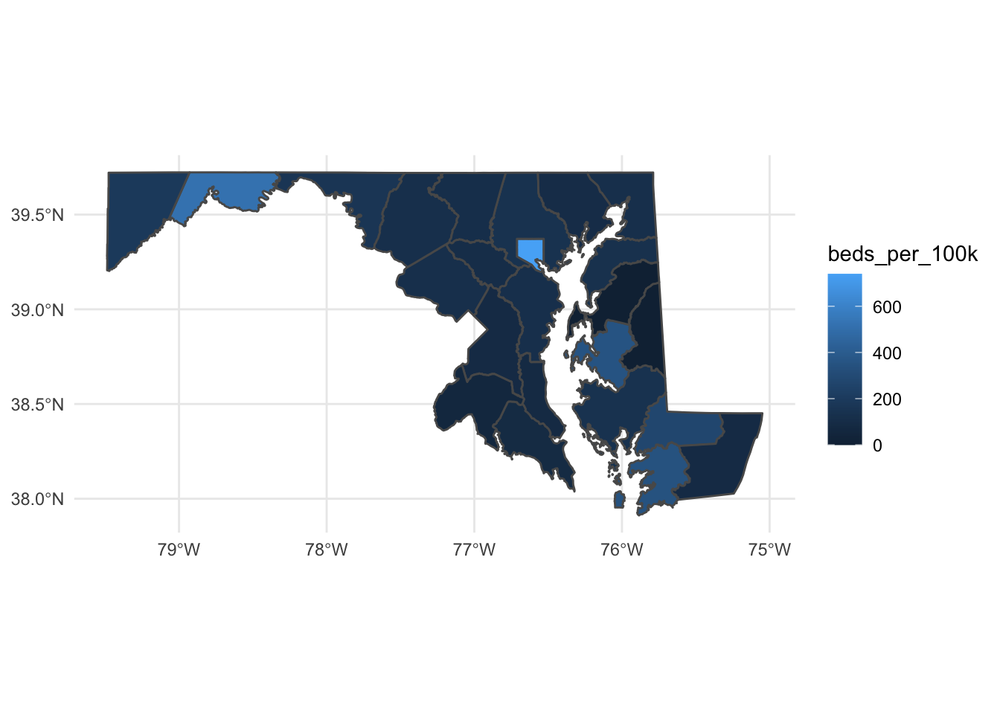
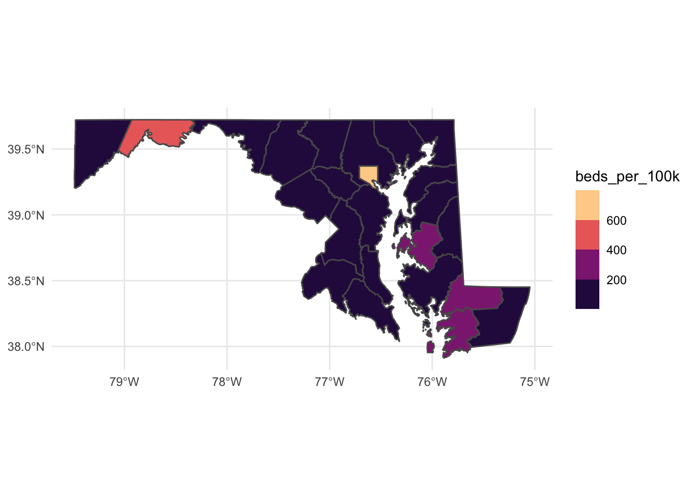
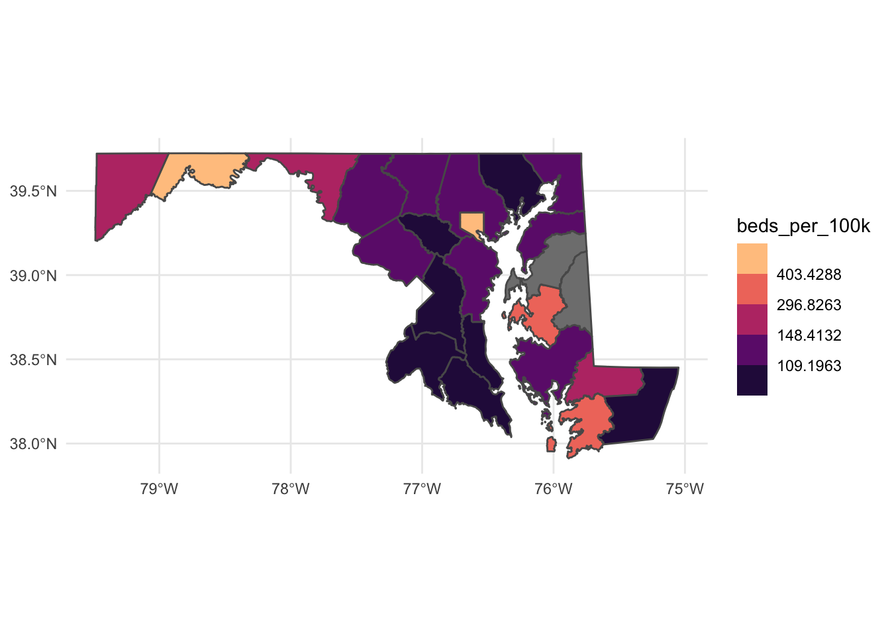

Chapter 21 Geographic analysis
In the previous chapter, we looked at Maryland’s hospitals and used layers to show where hospitals sit on a map of Maryland’s counties, and to show a bit of a pattern regarding concentration of the largest hospitals. Let’s go little further.
First, let’s load the libraries we’ll need. We’re also going to load tidycensus and set an API key for tidycensus.
library(tidyverse)
library(sf)
library(janitor)
library(tidycensus)
census_api_key("549950d36c22ff16455fe196bbbd01d63cfbe6cf")## To install your API key for use in future sessions, run this function with `install = TRUE`.And now let’s load the dataframe of hospital information from the previous chapter, and filter for the 50 General Acute Care hospitals in Maryland.
md_hospitals <- st_read("data/Hospitals/Hospitals.shp") %>%
filter(STATE == "MD") %>%
filter(TYPE == "GENERAL ACUTE CARE")## Reading layer `Hospitals' from data source
## `/Users/derekwillis/code/datajournalismbook/data/Hospitals/Hospitals.shp'
## using driver `ESRI Shapefile'
## Simple feature collection with 7581 features and 32 fields
## Geometry type: POINT
## Dimension: XY
## Bounding box: xmin: -176.6403 ymin: -14.29024 xmax: 145.7245 ymax: 71.29285
## Geodetic CRS: WGS 84md_hospitals## Simple feature collection with 50 features and 32 fields
## Geometry type: POINT
## Dimension: XY
## Bounding box: xmin: -79.40098 ymin: 37.99756 xmax: -75.21133 ymax: 39.64783
## Geodetic CRS: WGS 84
## First 10 features:
## OBJECTID ID NAME
## 1 364 0000921287 JOHNS HOPKINS HOSPITAL
## 2 365 0001021205 KENNEDY KREIGER INSTITUTE
## 3 366 0002321202 MERCY MEDICAL CENTER
## 4 367 0003721215 SINAI HOSPITAL OF BALTIMORE
## 5 368 0004121201 UNIVERSITY OF MARYLAND MEDICAL CENTER
## 6 370 0004821224 JOHNS HOPKINS BAYVIEW MEDICAL CENTER
## 7 404 0003521742 MERITUS MEDICAL CENTER
## 8 443 0001920910 HOLY CROSS HOSPITAL
## 9 446 0002520744 FORT WASHINGTON HOSPITAL
## 10 473 0004521502 WESTERN MARYLAND REGIONAL MEDICAL CENTER
## ADDRESS CITY STATE ZIP ZIP4
## 1 600 NORTH WOLFE STREET BALTIMORE MD 21287 NOT AVAILABLE
## 2 707 N BROADWAY BALTIMORE MD 21205 NOT AVAILABLE
## 3 301 ST PAUL PLACE BALTIMORE MD 21202 NOT AVAILABLE
## 4 2401 WEST BELVEDERE AVE BALTIMORE MD 21215 NOT AVAILABLE
## 5 22 S GREENE ST BALTIMORE MD 21201 NOT AVAILABLE
## 6 4940 EASTERN AVENUE BALTIMORE MD 21224 NOT AVAILABLE
## 7 11116 MEDICAL CAMPUS ROAD HAGERSTOWN MD 21742 NOT AVAILABLE
## 8 1500 FOREST GLEN ROAD SILVER SPRING MD 20910 NOT AVAILABLE
## 9 11711 LIVINGSTON ROAD FORT WASHINGTON MD 20744 NOT AVAILABLE
## 10 12500 WILLOWBROOK ROAD CUMBERLAND MD 21502 NOT AVAILABLE
## TELEPHONE TYPE STATUS POPULATION COUNTY
## 1 (410) 955-9540 GENERAL ACUTE CARE OPEN 951 BALTIMORE CITY
## 2 (443) 923-9305 GENERAL ACUTE CARE OPEN 70 BALTIMORE CITY
## 3 (410) 332-9237 GENERAL ACUTE CARE OPEN 281 BALTIMORE CITY
## 4 (410) 601-5131 GENERAL ACUTE CARE OPEN 467 BALTIMORE CITY
## 5 (410) 328-8667 GENERAL ACUTE CARE OPEN 800 BALTIMORE CITY
## 6 (410) 550-0123 GENERAL ACUTE CARE OPEN 477 BALTIMORE CITY
## 7 (240) 313-9500 GENERAL ACUTE CARE OPEN 247 WASHINGTON
## 8 (301) 754-7000 GENERAL ACUTE CARE OPEN 409 MONTGOMERY
## 9 (301) 292-7000 GENERAL ACUTE CARE OPEN 37 PRINCE GEORGE'S
## 10 (240) 964-2196 GENERAL ACUTE CARE OPEN 371 ALLEGANY
## COUNTYFIPS COUNTRY LATITUDE LONGITUDE NAICS_CODE
## 1 24510 USA 39.29611 -76.59197 622110
## 2 24510 USA 39.29928 -76.59282 622110
## 3 24510 USA 39.29292 -76.61288 622110
## 4 24510 USA 39.35230 -76.66209 622110
## 5 24510 USA 39.28791 -76.62493 622110
## 6 24510 USA 39.29068 -76.54678 622110
## 7 24043 USA 39.62219 -77.68256 622110
## 8 24031 USA 39.01472 -77.03574 622110
## 9 24033 USA 38.72856 -76.99270 622110
## 10 24001 USA 39.64783 -78.73324 622110
## NAICS_DESC
## 1 GENERAL MEDICAL AND SURGICAL HOSPITALS
## 2 GENERAL MEDICAL AND SURGICAL HOSPITALS
## 3 GENERAL MEDICAL AND SURGICAL HOSPITALS
## 4 GENERAL MEDICAL AND SURGICAL HOSPITALS
## 5 GENERAL MEDICAL AND SURGICAL HOSPITALS
## 6 GENERAL MEDICAL AND SURGICAL HOSPITALS
## 7 GENERAL MEDICAL AND SURGICAL HOSPITALS
## 8 GENERAL MEDICAL AND SURGICAL HOSPITALS
## 9 GENERAL MEDICAL AND SURGICAL HOSPITALS
## 10 GENERAL MEDICAL AND SURGICAL HOSPITALS
## SOURCE
## 1 http://dhmh.maryland.gov/ohcq/pages/licensee-directory.aspx
## 2 http://dhmh.maryland.gov/ohcq/pages/licensee-directory.aspx
## 3 http://dhmh.maryland.gov/ohcq/pages/licensee-directory.aspx
## 4 http://dhmh.maryland.gov/ohcq/pages/licensee-directory.aspx
## 5 http://dhmh.maryland.gov/ohcq/pages/licensee-directory.aspx
## 6 http://dhmh.maryland.gov/ohcq/pages/licensee-directory.aspx
## 7 http://dhmh.maryland.gov/ohcq/pages/licensee-directory.aspx
## 8 http://dhmh.maryland.gov/ohcq/pages/licensee-directory.aspx
## 9 http://dhmh.maryland.gov/ohcq/pages/licensee-directory.aspx
## 10 http://dhmh.maryland.gov/ohcq/pages/licensee-directory.aspx
## SOURCEDATE VAL_METHOD VAL_DATE
## 1 2018-08-09T00:00:00.000Z IMAGERY 2014-02-10T00:00:00.000Z
## 2 2018-08-09T00:00:00.000Z IMAGERY 2014-02-10T00:00:00.000Z
## 3 2018-08-09T00:00:00.000Z IMAGERY 2014-02-10T00:00:00.000Z
## 4 2018-08-09T00:00:00.000Z IMAGERY 2014-02-10T00:00:00.000Z
## 5 2018-08-09T00:00:00.000Z IMAGERY 2014-02-10T00:00:00.000Z
## 6 2018-08-09T00:00:00.000Z IMAGERY/OTHER 2014-02-10T00:00:00.000Z
## 7 2018-08-09T00:00:00.000Z IMAGERY 2014-02-10T00:00:00.000Z
## 8 2018-08-09T00:00:00.000Z IMAGERY 2014-02-10T00:00:00.000Z
## 9 2018-08-09T00:00:00.000Z IMAGERY 2014-02-10T00:00:00.000Z
## 10 2018-08-09T00:00:00.000Z IMAGERY 2014-02-10T00:00:00.000Z
## WEBSITE
## 1 http://www.hopkinsmedicine.org
## 2 http://www.kennedykrieger.org
## 3 http://www.mdmercy.com
## 4 http://www.lifebridgehealth.org/Sinai/Sinai1.aspx
## 5 http://www.umms.org/hospitals/ummc.htm
## 6 http://www.hopkinsbayview.org
## 7 http://www.meritushealth.com/For-Hospital-Patients-and-Visitors/Meritus-Medical-Center.aspx
## 8 http://www.holycrosshealth.org
## 9 http://www.fortwashingtonmc.org/
## 10 http://www.wmhs.com
## STATE_ID ALT_NAME ST_FIPS OWNER TTL_STAFF BEDS
## 1 NOT AVAILABLE NOT AVAILABLE 24 NON-PROFIT -999 951
## 2 NOT AVAILABLE NOT AVAILABLE 24 NON-PROFIT -999 70
## 3 NOT AVAILABLE NOT AVAILABLE 24 NON-PROFIT -999 281
## 4 NOT AVAILABLE NOT AVAILABLE 24 NON-PROFIT -999 467
## 5 NOT AVAILABLE NOT AVAILABLE 24 NON-PROFIT -999 800
## 6 NOT AVAILABLE NOT AVAILABLE 24 NON-PROFIT -999 477
## 7 NOT AVAILABLE NOT AVAILABLE 24 NON-PROFIT -999 247
## 8 NOT AVAILABLE NOT AVAILABLE 24 NON-PROFIT -999 409
## 9 NOT AVAILABLE NOT AVAILABLE 24 NON-PROFIT -999 37
## 10 NOT AVAILABLE NOT AVAILABLE 24 NON-PROFIT -999 371
## TRAUMA HELIPAD geometry
## 1 LEVEL I, LEVEL PEDIATRIC Y POINT (-76.59197 39.29611)
## 2 NOT AVAILABLE Y POINT (-76.59282 39.29928)
## 3 NOT AVAILABLE N POINT (-76.61288 39.29292)
## 4 LEVEL II Y POINT (-76.66209 39.3523)
## 5 PARC Y POINT (-76.62493 39.28791)
## 6 LEVEL II Y POINT (-76.54678 39.29068)
## 7 LEVEL III Y POINT (-77.68256 39.62219)
## 8 NOT AVAILABLE N POINT (-77.03574 39.01472)
## 9 NOT AVAILABLE Y POINT (-76.9927 38.72856)
## 10 LEVEL III Y POINT (-78.73324 39.64783)For the rest of this chapter, we’re going to work on building a map that will help us gain insight into geographic patterns in hospital bed availability by county in Maryland. Our question: by examining the number of hospital beds per 100,000 people in each county, what regional geographic patterns can we identify?
Each hospital exists inside of a county, so we’re going to first calculate the total number of beds in each county. We do this by first converting the md_hospitals data to a standard dataframe (instead of a spatial dataframe) using as_tibble(), then grouping by county and totaling the number of beds. Finally, let’s sort by total_beds to see which county has the most.
md_beds_by_county <- md_hospitals %>%
as_tibble() %>%
group_by(COUNTY) %>%
summarise(
total_beds = sum(BEDS)
) %>%
arrange(desc(total_beds))
md_beds_by_county## # A tibble: 22 x 2
## COUNTY total_beds
## <chr> <dbl>
## 1 BALTIMORE CITY 4505
## 2 MONTGOMERY 1298
## 3 BALTIMORE 1152
## 4 PRINCE GEORGE'S 789
## 5 ANNE ARUNDEL 673
## 6 ALLEGANY 371
## 7 HOWARD 331
## 8 FREDERICK 308
## 9 WICOMICO 281
## 10 HARFORD 255
## # … with 12 more rowsSo, what do we see here? Baltimore City has the most, followed by Montgomery, Baltimore County and Prince George’s. All big counties.
Next, we’ll go out and get population data for each county from tidycensus. The variable for total population is B01001_001.
md_county_population <- get_acs(geography = "county",
variables = c(population = "B01001_001"),
state = "MD")## Getting data from the 2015-2019 5-year ACSmd_county_population## # A tibble: 24 x 5
## GEOID NAME variable estimate moe
## <chr> <chr> <chr> <dbl> <dbl>
## 1 24001 Allegany County, Maryland population 71445 NA
## 2 24003 Anne Arundel County, Maryland population 571275 NA
## 3 24005 Baltimore County, Maryland population 828018 NA
## 4 24009 Calvert County, Maryland population 91511 NA
## 5 24011 Caroline County, Maryland population 33049 NA
## 6 24013 Carroll County, Maryland population 167699 NA
## 7 24015 Cecil County, Maryland population 102552 NA
## 8 24017 Charles County, Maryland population 159428 NA
## 9 24019 Dorchester County, Maryland population 32138 NA
## 10 24021 Frederick County, Maryland population 251422 NA
## # … with 14 more rowsUltimately, we’re going to join this county population table with our beds by county table, and then calculate a beds per 100,000 people statistic. But remember, we then want to visualize this data by drawing a county map that helps us pick out trends. Thinking ahead, we know we’ll need a county map shapefile. Fortunately, we can pull this geometry information right from tidycensus at the same time that we pull in the population data by adding “geometry = TRUE” to our get_acs function.
md_county_population <- get_acs(geography = "county",
variables = c(population = "B01001_001"),
state = "MD",
geometry = TRUE)## Getting data from the 2015-2019 5-year ACS## Downloading feature geometry from the Census website. To cache shapefiles for use in future sessions, set `options(tigris_use_cache = TRUE)`.##
|
| | 0%
|
| | 1%
|
|= | 1%
|
|= | 2%
|
|== | 2%
|
|== | 3%
|
|== | 4%
|
|=== | 4%
|
|=== | 5%
|
|==== | 5%
|
|==== | 6%
|
|===== | 7%
|
|===== | 8%
|
|====== | 8%
|
|====== | 9%
|
|======= | 9%
|
|======= | 10%
|
|========= | 12%
|
|============ | 17%
|
|============= | 18%
|
|============= | 19%
|
|============== | 19%
|
|============== | 20%
|
|================ | 22%
|
|==================== | 28%
|
|==================== | 29%
|
|===================== | 29%
|
|===================== | 30%
|
|===================== | 31%
|
|====================== | 31%
|
|====================== | 32%
|
|======================= | 33%
|
|======================== | 34%
|
|============================ | 40%
|
|============================ | 41%
|
|============================= | 41%
|
|============================= | 42%
|
|============================== | 42%
|
|============================== | 43%
|
|============================== | 44%
|
|=============================== | 44%
|
|=================================== | 50%
|
|====================================== | 54%
|
|======================================= | 55%
|
|======================================= | 56%
|
|======================================== | 56%
|
|======================================== | 57%
|
|========================================= | 59%
|
|========================================== | 60%
|
|=========================================== | 62%
|
|=============================================== | 68%
|
|================================================== | 71%
|
|================================================== | 72%
|
|=================================================== | 72%
|
|=================================================== | 73%
|
|====================================================== | 78%
|
|======================================================= | 78%
|
|======================================================== | 79%
|
|======================================================== | 80%
|
|========================================================== | 83%
|
|================================================================ | 91%
|
|================================================================= | 93%
|
|================================================================== | 94%
|
|=================================================================== | 96%
|
|===================================================================== | 98%
|
|======================================================================| 100%md_county_population## Simple feature collection with 24 features and 5 fields
## Geometry type: MULTIPOLYGON
## Dimension: XY
## Bounding box: xmin: -79.48765 ymin: 37.91172 xmax: -75.04894 ymax: 39.72304
## Geodetic CRS: NAD83
## First 10 features:
## GEOID NAME variable estimate moe
## 1 24035 Queen Anne's County, Maryland population 49632 NA
## 2 24005 Baltimore County, Maryland population 828018 NA
## 3 24003 Anne Arundel County, Maryland population 571275 NA
## 4 24013 Carroll County, Maryland population 167699 NA
## 5 24021 Frederick County, Maryland population 251422 NA
## 6 24039 Somerset County, Maryland population 25729 NA
## 7 24029 Kent County, Maryland population 19536 NA
## 8 24047 Worcester County, Maryland population 51765 NA
## 9 24027 Howard County, Maryland population 318855 NA
## 10 24033 Prince George's County, Maryland population 908670 NA
## geometry
## 1 MULTIPOLYGON (((-76.24918 3...
## 2 MULTIPOLYGON (((-76.3257 39...
## 3 MULTIPOLYGON (((-76.84036 3...
## 4 MULTIPOLYGON (((-77.31151 3...
## 5 MULTIPOLYGON (((-77.67716 3...
## 6 MULTIPOLYGON (((-75.95962 3...
## 7 MULTIPOLYGON (((-76.27737 3...
## 8 MULTIPOLYGON (((-75.66061 3...
## 9 MULTIPOLYGON (((-77.18711 3...
## 10 MULTIPOLYGON (((-77.07995 3...We now have a new column, geometry, that contains the “MULTIPOLYGON” data that will draw an outline of each county when we go to draw a map.
The next step will be to join our population data to our hospital bed data on the county column.
But there’s a problem. The column in our population data that has county names is called “NAME,” and it has the full name of the county spelled out in title case – first word capitalized and has “County” and “Maryland” in it. The beds data just has the uppercase name of the county. For example, the population data has “Anne Arundel County, Maryland” and the beds data has “ANNE ARUNDEL”
md_county_population## Simple feature collection with 24 features and 5 fields
## Geometry type: MULTIPOLYGON
## Dimension: XY
## Bounding box: xmin: -79.48765 ymin: 37.91172 xmax: -75.04894 ymax: 39.72304
## Geodetic CRS: NAD83
## First 10 features:
## GEOID NAME variable estimate moe
## 1 24035 Queen Anne's County, Maryland population 49632 NA
## 2 24005 Baltimore County, Maryland population 828018 NA
## 3 24003 Anne Arundel County, Maryland population 571275 NA
## 4 24013 Carroll County, Maryland population 167699 NA
## 5 24021 Frederick County, Maryland population 251422 NA
## 6 24039 Somerset County, Maryland population 25729 NA
## 7 24029 Kent County, Maryland population 19536 NA
## 8 24047 Worcester County, Maryland population 51765 NA
## 9 24027 Howard County, Maryland population 318855 NA
## 10 24033 Prince George's County, Maryland population 908670 NA
## geometry
## 1 MULTIPOLYGON (((-76.24918 3...
## 2 MULTIPOLYGON (((-76.3257 39...
## 3 MULTIPOLYGON (((-76.84036 3...
## 4 MULTIPOLYGON (((-77.31151 3...
## 5 MULTIPOLYGON (((-77.67716 3...
## 6 MULTIPOLYGON (((-75.95962 3...
## 7 MULTIPOLYGON (((-76.27737 3...
## 8 MULTIPOLYGON (((-75.66061 3...
## 9 MULTIPOLYGON (((-77.18711 3...
## 10 MULTIPOLYGON (((-77.07995 3...md_beds_by_county## # A tibble: 22 x 2
## COUNTY total_beds
## <chr> <dbl>
## 1 BALTIMORE CITY 4505
## 2 MONTGOMERY 1298
## 3 BALTIMORE 1152
## 4 PRINCE GEORGE'S 789
## 5 ANNE ARUNDEL 673
## 6 ALLEGANY 371
## 7 HOWARD 331
## 8 FREDERICK 308
## 9 WICOMICO 281
## 10 HARFORD 255
## # … with 12 more rowsIf they’re going to join properly, we need to clean one of them up to make it match the other.
Let’s clean the population table. We’re going to rename the “NAME” column to “COUNTY,” then convert it to uppercase while also removing “, Maryland” and “County.” Next we’ll remove any white spaces after that first cleaning step that, if left in, would prevent a proper join. We’re also going to rename the column that contains the population information from “estimate” to “population” and select only the county name and the population columns, along with the geometry. That leaves us with this tidy table.
md_county_population <- md_county_population %>%
rename(COUNTY = NAME) %>%
mutate(COUNTY = toupper(str_remove_all(COUNTY,", Maryland|County"))) %>%
mutate(COUNTY = str_trim(COUNTY,side="both")) %>%
rename(population = estimate) %>%
select(COUNTY, population, geometry)
md_county_population## Simple feature collection with 24 features and 2 fields
## Geometry type: MULTIPOLYGON
## Dimension: XY
## Bounding box: xmin: -79.48765 ymin: 37.91172 xmax: -75.04894 ymax: 39.72304
## Geodetic CRS: NAD83
## First 10 features:
## COUNTY population geometry
## 1 QUEEN ANNE'S 49632 MULTIPOLYGON (((-76.24918 3...
## 2 BALTIMORE 828018 MULTIPOLYGON (((-76.3257 39...
## 3 ANNE ARUNDEL 571275 MULTIPOLYGON (((-76.84036 3...
## 4 CARROLL 167699 MULTIPOLYGON (((-77.31151 3...
## 5 FREDERICK 251422 MULTIPOLYGON (((-77.67716 3...
## 6 SOMERSET 25729 MULTIPOLYGON (((-75.95962 3...
## 7 KENT 19536 MULTIPOLYGON (((-76.27737 3...
## 8 WORCESTER 51765 MULTIPOLYGON (((-75.66061 3...
## 9 HOWARD 318855 MULTIPOLYGON (((-77.18711 3...
## 10 PRINCE GEORGE'S 908670 MULTIPOLYGON (((-77.07995 3...Now we can join them.
md_beds_per_100k <- md_county_population %>%
left_join(md_beds_by_county)## Joining, by = "COUNTY"md_beds_per_100k## Simple feature collection with 24 features and 3 fields
## Geometry type: MULTIPOLYGON
## Dimension: XY
## Bounding box: xmin: -79.48765 ymin: 37.91172 xmax: -75.04894 ymax: 39.72304
## Geodetic CRS: NAD83
## First 10 features:
## COUNTY population total_beds geometry
## 1 QUEEN ANNE'S 49632 NA MULTIPOLYGON (((-76.24918 3...
## 2 BALTIMORE 828018 1152 MULTIPOLYGON (((-76.3257 39...
## 3 ANNE ARUNDEL 571275 673 MULTIPOLYGON (((-76.84036 3...
## 4 CARROLL 167699 189 MULTIPOLYGON (((-77.31151 3...
## 5 FREDERICK 251422 308 MULTIPOLYGON (((-77.67716 3...
## 6 SOMERSET 25729 89 MULTIPOLYGON (((-75.95962 3...
## 7 KENT 19536 26 MULTIPOLYGON (((-76.27737 3...
## 8 WORCESTER 51765 45 MULTIPOLYGON (((-75.66061 3...
## 9 HOWARD 318855 331 MULTIPOLYGON (((-77.18711 3...
## 10 PRINCE GEORGE'S 908670 789 MULTIPOLYGON (((-77.07995 3...We have two NAs after we join, for Queen Anne’s County and Caroline County. That’s not an error. There are no General Acute Care hospitals in those counties, according to our data (it’s why our beds table has 22 rows, not 24). So let’s convert those values to 0 using replace_na().
md_beds_per_100k <- md_county_population %>%
left_join(md_beds_by_county) %>%
mutate(total_beds = replace_na(total_beds,0))## Joining, by = "COUNTY"md_beds_per_100k## Simple feature collection with 24 features and 3 fields
## Geometry type: MULTIPOLYGON
## Dimension: XY
## Bounding box: xmin: -79.48765 ymin: 37.91172 xmax: -75.04894 ymax: 39.72304
## Geodetic CRS: NAD83
## First 10 features:
## COUNTY population total_beds geometry
## 1 QUEEN ANNE'S 49632 0 MULTIPOLYGON (((-76.24918 3...
## 2 BALTIMORE 828018 1152 MULTIPOLYGON (((-76.3257 39...
## 3 ANNE ARUNDEL 571275 673 MULTIPOLYGON (((-76.84036 3...
## 4 CARROLL 167699 189 MULTIPOLYGON (((-77.31151 3...
## 5 FREDERICK 251422 308 MULTIPOLYGON (((-77.67716 3...
## 6 SOMERSET 25729 89 MULTIPOLYGON (((-75.95962 3...
## 7 KENT 19536 26 MULTIPOLYGON (((-76.27737 3...
## 8 WORCESTER 51765 45 MULTIPOLYGON (((-75.66061 3...
## 9 HOWARD 318855 331 MULTIPOLYGON (((-77.18711 3...
## 10 PRINCE GEORGE'S 908670 789 MULTIPOLYGON (((-77.07995 3...Our final step before visualization, let’s calculate the number of beds per 100,000 for each county and sort from highest to lowest to see waht trends we can identify just from the table.
md_beds_per_100k <- md_county_population %>%
left_join(md_beds_by_county) %>%
mutate(total_beds = replace_na(total_beds,0)) %>%
mutate(beds_per_100k = total_beds/population*100000) %>%
arrange(desc(beds_per_100k))## Joining, by = "COUNTY"md_beds_per_100k## Simple feature collection with 24 features and 4 fields
## Geometry type: MULTIPOLYGON
## Dimension: XY
## Bounding box: xmin: -79.48765 ymin: 37.91172 xmax: -75.04894 ymax: 39.72304
## Geodetic CRS: NAD83
## First 10 features:
## COUNTY population total_beds beds_per_100k
## 1 BALTIMORE CITY 609032 4505 739.6984
## 2 ALLEGANY 71445 371 519.2806
## 3 TALBOT 37167 132 355.1538
## 4 SOMERSET 25729 89 345.9132
## 5 WICOMICO 102539 281 274.0421
## 6 GARRETT 29235 55 188.1307
## 7 WASHINGTON 150109 247 164.5471
## 8 DORCHESTER 32138 46 143.1327
## 9 BALTIMORE 828018 1152 139.1274
## 10 KENT 19536 26 133.0876
## geometry
## 1 MULTIPOLYGON (((-76.71152 3...
## 2 MULTIPOLYGON (((-79.06756 3...
## 3 MULTIPOLYGON (((-76.34647 3...
## 4 MULTIPOLYGON (((-75.95962 3...
## 5 MULTIPOLYGON (((-75.92033 3...
## 6 MULTIPOLYGON (((-79.48765 3...
## 7 MULTIPOLYGON (((-78.36346 3...
## 8 MULTIPOLYGON (((-76.06544 3...
## 9 MULTIPOLYGON (((-76.3257 39...
## 10 MULTIPOLYGON (((-76.27737 3...Let’s take a look at the result of this table. Baltimore City is still up there at the top, even when measuring by beds per 100k. But there are some surpising ones at the top, some of Maryland’s smallest counties! Allegany, Talbot, Somerset may not have that many beds, but they also don’t have a lot of people.
Okay, now let’s visualize. We’re going to build a choropleth map, with the color of each county – the fill – set according to the number of beds per 100K on a color gradient.
ggplot() +
geom_sf(data=md_beds_per_100k, aes(fill=beds_per_100k)) +
theme_minimal() This map is okay, but the color scale makes it hard to draw fine-grained differences. Let’s try applying the magma color scale we learned in the last chapter.
ggplot() +
geom_sf(data=md_beds_per_100k, aes(fill=beds_per_100k)) +
theme_minimal() +
scale_fill_viridis_b(option="magma") The highest ranking counties stand out nicely in this version, but it’s still hard to make out fine-grained differences between counties.
So let’s change the color scale to a “log” scale, which will help us see those differences a bit more clearly.
ggplot() +
geom_sf(data=md_beds_per_100k, aes(fill=beds_per_100k)) +
theme_minimal() +
scale_fill_viridis_b(option="magma",trans = "log")## Warning: Transformation introduced infinite values in discrete y-axis Some interesting regional patterns finally emerge.
The Eastern Shore and Western Maryland have more beds per capita than Central Maryland (with the exception of Baltimore City). And Southern Maryland – PG, Charles, Calvert and St. Mary’s – has by far the fewest beds per capita of any other region.